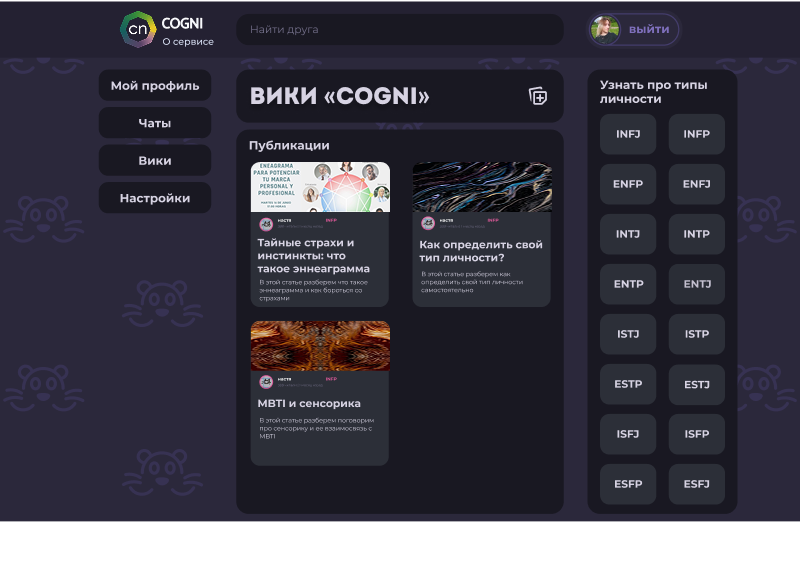
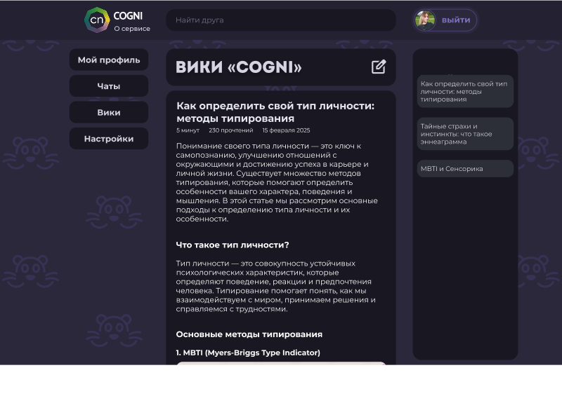
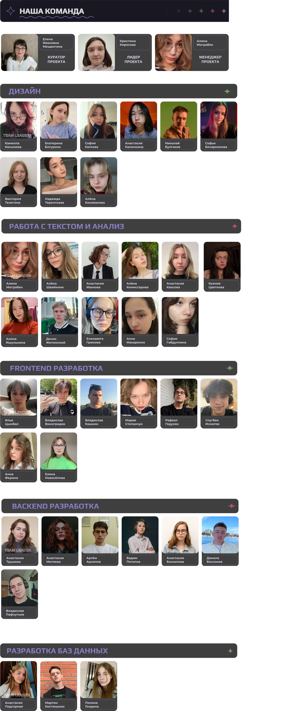

Cogni – это социальная сеть, которая основывается на системе MBTI
MBTI помогает найти пользователя с схожими интересами и ценностями, что уменьшит время поиска знакомств.
Использование MBTI в социальных сетях может помочь пользователям лучше понять свои личностные черты, характер и как они влияют на их поведение.
Также существует раздел со статьями, которые помогут пользователям больше узнать про свой тип личности.
|  |  |
Информация об участниках проекта, их роли и вклад.
